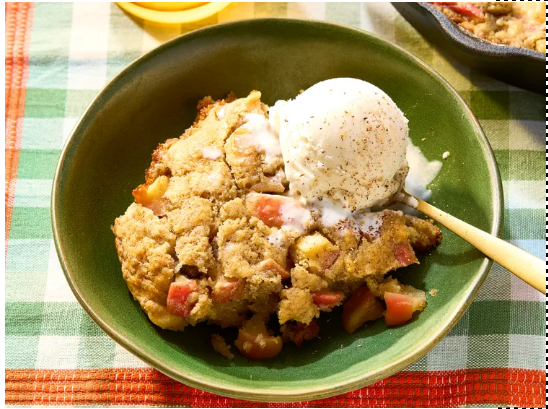

Apple Cinnamon Honey Cake
Home

This apple cinnamon spoon cake is really easy to make and is full of fall flavors. Everything is cooked in one pan. Serve apple-cinnamon cake while still warm with vanilla ice cream.
- 3 cups Honeycrisp apples, cored and diced
- 3 tablespoons white sugar
- 1 1/4 teaspoons cinnamon, divided
- 1/8 teaspoon nutmeg
- Gather all ingredients.
- Preheat the oven to 350 degrees F (175 degrees C).
- Combine apples, 3 tablespoons white sugar, 1/4 teaspoon cinnamon, and nutmeg in a bowl. Toss to combine. Let sit for 10 minutes.
- Melt butter in a 10-inch ovengoing skillet over medium heat. Add apple mixture and cook until tender, about 5 minutes. Remove apples from skillet and set aside.